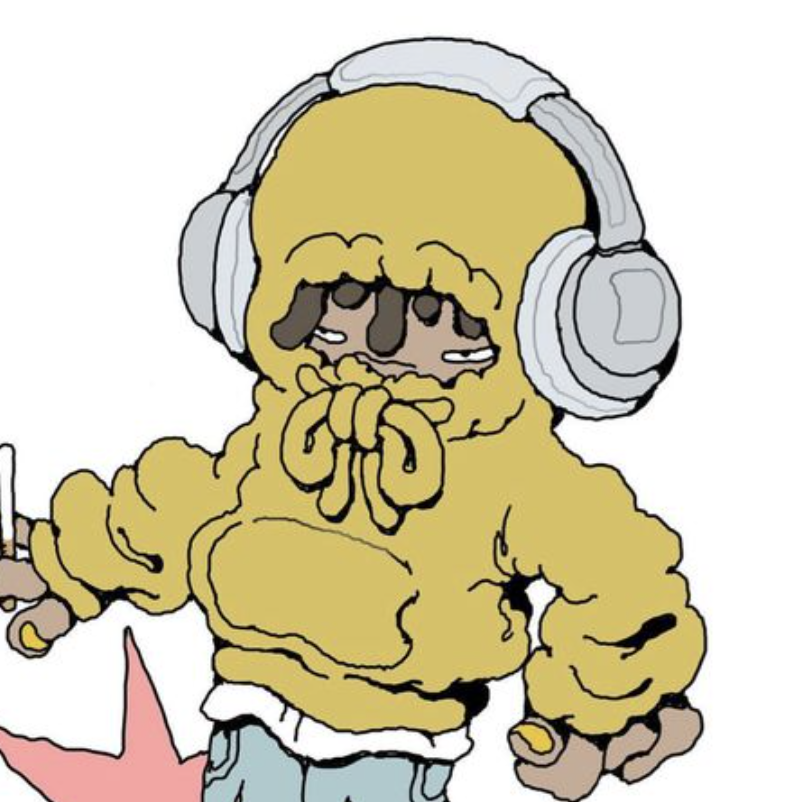
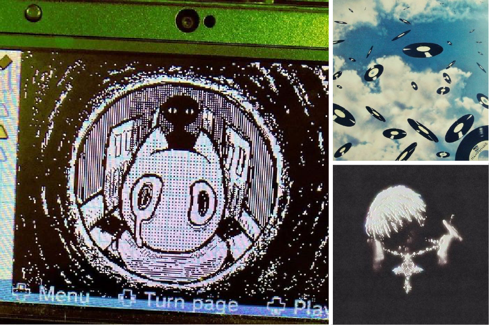
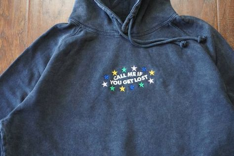

Home
Create

Profile
Username
Usertag
1 following
Share
Edit profile
Created
Saved
All Pins
35 Pins
1mo

Collage
2 Pins
1mo
Board suggestions
Grafitti drawing
10 pins
Cute cats
10 pins
Men hairstyles
7 pins
Sketches
7 pins
Graphic poster
5 pins
Unorganized ideas
Organize
TeePublic
Save
Profile
D3Nim
Save
Profile
PosterClub
Save
Profile
Hyperr!
Save
Profile
Shariv M.
Save
Profile
LiL bud
Goofy

Grung$
Green Fn
Nothing to show...yet! Pins you create will live here.
Create Pin